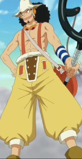
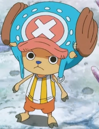
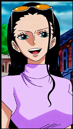
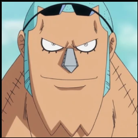
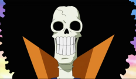
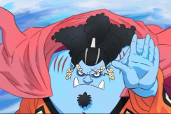

Equipage
Cette page contient les membres de l’équipage au chapeau de paille. (Ordre de recrutement)

| Aspect |

|

|
|---|---|---|
| Nom | Monkey D. Luffy | Roronoa Zoro |
| Role | Chef | Bras droit (Second) |
| Pouvoir (compétences) | Fruit du demon : gomu gomu no mi. Il a le pouvoir de l’élasticité. Sont corps est entierement en caoutchouc | Fruit du démon : aucun Il se bat principalement avec ses trois sabres, un dans chaque main et, un dans la bouche. |
| Prime (Derniere à jour) | 1,5 milliard Berrys | 320 millions Berrys |
| Lieux de provenance | Luffy est né dans le Village de Fuchsia dans East Blue | Dans le village de Shimotsuki |
| Aspect |

|

|
|---|---|---|
| Nom | Sanji Vinsmoke | Nami |
| Role | Cuisinier | Navigatrice |
| Pouvoir (compétences) | Fruit du demon : aucun Il se bat avec ses jambes exlusivement. Il ne se bat jamais avec ses mains du fait qu’il ne veut pas les abimer. | Fruit du demon : aucun Elle se bat a l’aide d’un baton qui peut controler la méteo et provoqué : des tempettes, la foudre, des tornades, etc… |
| Prime (Derniere à jour) | 330 millions Berrys | 66 millions Berrys |
| Lieux de provenance | Dans le royaume des Germa, sur North Blue. | Dans le village de Cocoyasi sur les îles Conomi. |
| Aspect |

|

|
|---|---|---|
| Nom | Usopp | Tony-Tony Chopper |
| Role | Tireur d’elite | Medecin |
| Pouvoir (compétences) | Fruit du demon : aucun Il se bat avec son lance pierre. Il est l’un des meilleurs snipers connu. | Fruit du demon : hito hito no mi C’est un renne qui a le pouvoir de se transformer en humain (hybride). Il metrise plusieur forme pour le combat. |
| Prime (Derniere à jour) | 200 millions Berrys | 100 millions Berrys |
| Lieux de provenance | Dans le village de Sirop sur East Blue | Chopper est né sur l’ile de Drum, Sur grand line |
| Aspect |

|

|
|---|---|---|
| Nom | Nico Robin | Franky |
| Role | Archeologue | Charpentier |
| Pouvoir (compétences) | Fruit du demon :Hana hana no mi Se fruit lui permet de faire pousser n’importe quelle partie de son corps sur n’importe quelle surface. | Fruit du demon : aucun C’est un « homme robot ». il possede une multitude d’arme cacher dans sont corps. |
| Prime (Derniere à jour) | 130 millions Berrys | 94 millions Berrys |
| Lieux de provenance | Sur l'île Ohara, dans West Blue. | Franky est originaire de South Blue. Sur l’ile de Water Seven |
| Aspect |

|

|
|---|---|---|
| Nom | Brook | Jinbe |
| Role | Musician | Timonier |
| Pouvoir (compétences) | Fruit du demon : Yomi Yomi no Mi Se fruit lui a permit de ressusiter une fois. Se qui la rendu mort vivant. | Fruit du demon : aucun C’est un homme poisson, il maitrise le cara Karaté des hommes poissons. |
| Prime (Derniere à jour) | 83 millions Berrys | 438 millions Berrys |
| Lieux de provenance | Inconnu | Né su l’ile des hommes poissons, sous Red line |